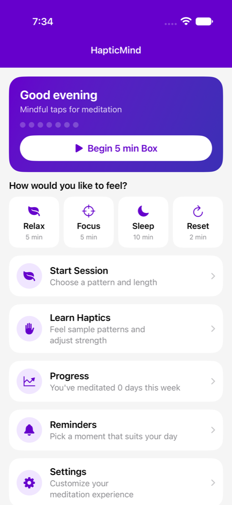
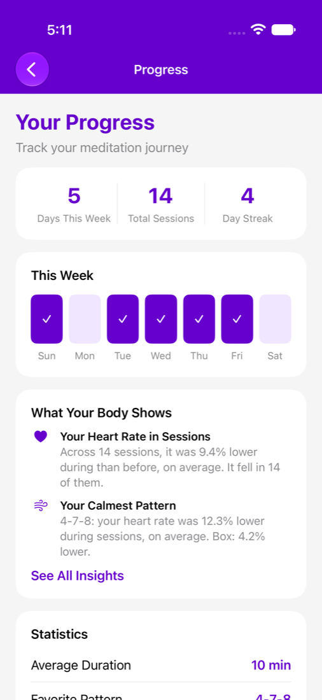
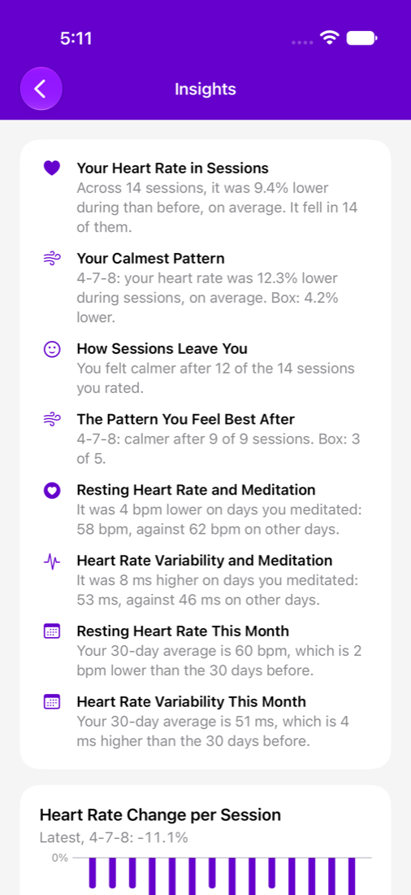
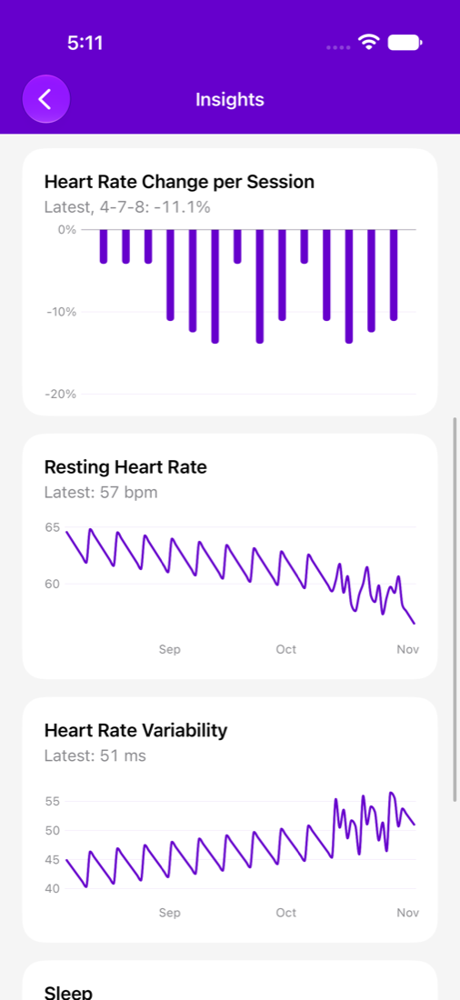
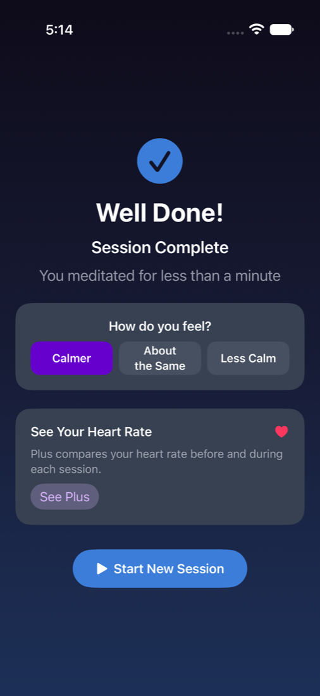

Meditation you can feel, without looking at or listening to your phone. Everything we add has to work by touch, with your eyes closed.
In development and being tested now. These screens use sample data, and details may change before release.

FreeStart from how you'd like to feel: Relax, Focus, Sleep or Reset. One tap begins a session, with nothing to choose first.

PlusSee what works for you, from your Apple Health data: the patterns, times of day and session lengths that calm you most.

PlusCompare your resting heart rate, heart rate variability and sleep on days you meditate. These are patterns in your own data, not medical advice.

PlusFollow your heart rate change in each session, and 90 days of your readings. It's all worked out on your iPhone.

FreeOne optional tap after a session. Plus turns your answers into insights, so you can see results with or without an Apple Watch.
We're exploring these, and haven't committed to them yet.